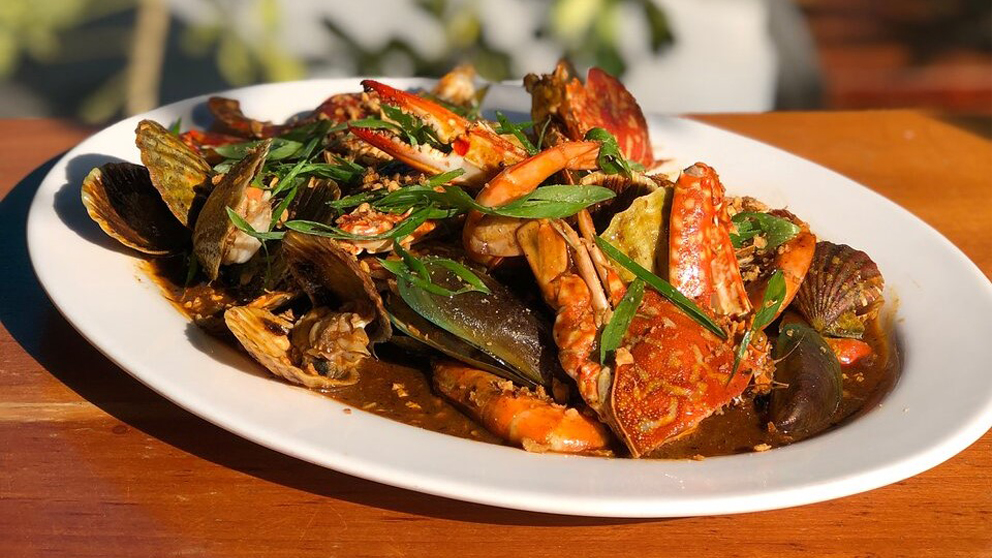

Video credits to Siquijor Tourism
Siquijor, an island province in the Philippines, has a rich and colorful history that is intertwined with myths, legends, and a diverse cultural heritage. Pre-colonial Siquijor was believed to be inhabited by the indigenous people long before the arrival of Spanish colonizers. The island's original name, "Isla del Fuego" or Island of Fire, was inspired by the eerie glow produced by countless fireflies along its shores. Spanish colonization in the 16th century left a lasting impact on Siquijor, influencing its culture and introducing Christianity. The island became a center for missionary activities, with the establishment of churches and convents that still stand today as historical landmarks. Siquijor gained a mystical reputation due to its association with traditional folk medicine and spiritual practices. The island became a refuge for healers and shamans, known for their expertise in herbal medicine and rituals. This mystical aura has contributed to the island's allure and attracted curious visitors seeking unique cultural experiences. Over the years, Siquijor has evolved into a captivating tourist destination, known for its pristine beaches, lush landscapes, and vibrant festivals. While the mysticism persists in the form of folklore and local traditions, modern Siquijor welcomes travelers with warmth and hospitality, inviting them to explore its natural wonders and immerse themselves in its rich cultural tapestry.
Cradled in the central Visayan archipelago of the Philippines, the mystical island of Siquijor is not only known for its pristine beaches and lush landscapes but also for its rich cultural tapestry woven through a myriad of festivals. These vibrant celebrations are an expression of Siquijor's identity, combining centuries-old traditions, religious fervor, and the unique mystique that surrounds this captivating island.
As you traverse the winding roads and explore the charming communities of Siquijor, you'll find that each town and barangay holds its own distinct fiesta, a time when the island comes alive with joy, color, and a sense of community. From the rhythmic beats of lively street dances to the solemn processions honoring patron saints, Siquijor's festivals provide a unique window into the soul of this extraordinary destination.
Join us on a journey as we unveil the enchanting festivals that grace Siquijor throughout the year. From the famous Bugwas Festival to the lesser-known gems like Solili Festival, each celebration reflects the island's deep-rooted traditions, close-knit communities, and the warm hospitality that defines the spirit of Siquijor. Let the festivals be your guide, offering not just a glimpse into the cultural heritage but also an invitation to partake in the joy, gratitude, and vibrant energy that make Siquijor a truly magical island.

Date: October 3-4
Patron Saint: St. Francis of Assisi
Known as the Dilaab Festival, this celebration highlights the warm hospitality of the Siquijodnons, capturing the essence of the island's former name, "Isla de Fuego" (Island of Fire). The festival pays homage to the natural beauty of Siquijor and honors St. Francis of Assisi, a patron saint known for his love of nature. The festivities include a series of activities and shows, making it one of the grandest celebrations on the island.

Date: August 24-25
Patron Saint: St. Augustine of Hippo
The Bugwas Festival in San Juan is a vibrant celebration of a bountiful harvest, dedicated to St. Augustine of Hippo. "Bugwas," meaning a spurt of water, symbolizes the abundance of spring waters blessing the town. The festival brings joy and prosperity to the community, showcasing the fruitful harvest with parades, dances, and communal festivities.

Date: May 14-15
Patron Saint: St. Isidore de Labrador
Lazi's Saging Festival honors St. Isidore de Labrador and recognizes the significance of bananas in the lives of the people. The festival depicts the story of how bananas came to exist through dances. It also showcases the variety of bananas and praises the abundance of the harvest.

Date: May 20-21
Patron Saint: Our Lady of Divine Providence
The Lubi Festival, held in honor of Our Lady of Divine Providence, expresses joy and gratitude for a bountiful harvest and blessings received from the coconut tree, locally known as "Lubi." The festival features a dance contest portraying the celebration.

Date: July 15-16
Patron Saint: St. Mt. Carmel
The Pamukad Festival expresses joy and thanksgiving for the bountiful catch of fish through the intercession of Divine power. The festival demonstrates different fishing routines and rituals of the fisher folks, taking place a couple of days before July 16, the town's fiesta celebration.

May 2-3
Patron Saint: St. Vincent
Larena's Canoan Festival encourages farmers from the mountains to sell their fresh produce in town markets, celebrating the hard work of farmers and laborers. The festival includes beauty pageants, street dances, and performances by major artists in the town square. It signifies the success of farmers and the abundance of fresh vegetables and fruits for all to enjoy.

Date: February (exact dates may vary)
The Solili Festival is a unique celebration that embraces Siquijor's mystique and cultural diversity. The festival is dedicated to showcasing the island's traditional practices, folklore, and mystical charm. Through street dances, parades, and traditional rituals, Solili Festival captivates visitors with the enchanting traditions that make Siquijor truly special. It is a celebration that highlights the island's identity and invites everyone to experience its captivating mysticism.
Siquijor is renowned for its mystical traditions, rooted in folk healing and spiritual practices. The island is home to traditional healers known as "mananambals" who use herbs, rituals, and chants for healing purposes. Visitors can witness demonstrations of these practices and learn about the cultural significance of mysticism in Siquijor.

The Spanish influence on Siquijor's culture is evident in its historical churches and convents. Notable structures include the St. Isidore Church and Convent in Lazi, which are considered among the oldest in the Philippines. These sites offer a glimpse into the island's religious and architectural history.

Experience a delectable selection of fresh seafood in Siquijor, embodying the essence of the island's coastal allure. From mouthwatering fish dishes to enticing shellfish creations, the local seafood cuisine mirrors the abundant harvest from the surrounding waters. Immerse yourself in the vibrant flavors and culinary legacy as you relish the finest offerings from the sea in this tropical paradise.
